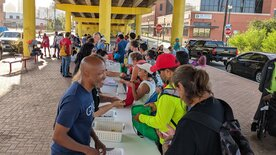
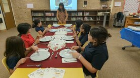
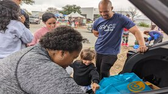

Care Bags for the Unhoused is our monthly ministry, where we bless 70 to 100 unhoused
individuals every last Saturday of the month. We have faithfully linked arms with our small
group and a small group from another church since 2022. We provide food and hygiene supplies
and allow them to “shop” for the items they want and need. We place all the donated items
they select in a drawstring bag containing a Gospel Tract.

In the Young Ladies Organization, we partner with a local school, whose student body is
predominantly economically disadvantaged, to provide opportunities for 4th and 5th-grade
girls to see their inner beauty.
In the past, we have purchased snacks for their monthly character-building meetings and
hosted a dinner etiquette lesson for the young ladies. However, this year, we are raising
the bar. Plans are underway to let the young ladies have a "night out on the town." At the
end of the school, we plan to purchase dresses for them, pick them up in limos, and treat
them to a restaurant where they can practice what they learned in the etiquette lessons.

Gifts for Migrants is our program where we provide gifts to child migrants the week of
Christmas. Last Christmas, we gave away over 50 Christmas toys and Christian-themed coloring
books. It is a great experience to see the children's faces light up and to see the
thankfulness of the parents during what is often a very stressful time for them. During the
winter, we also provide blankets to the adults and jackets to the children.